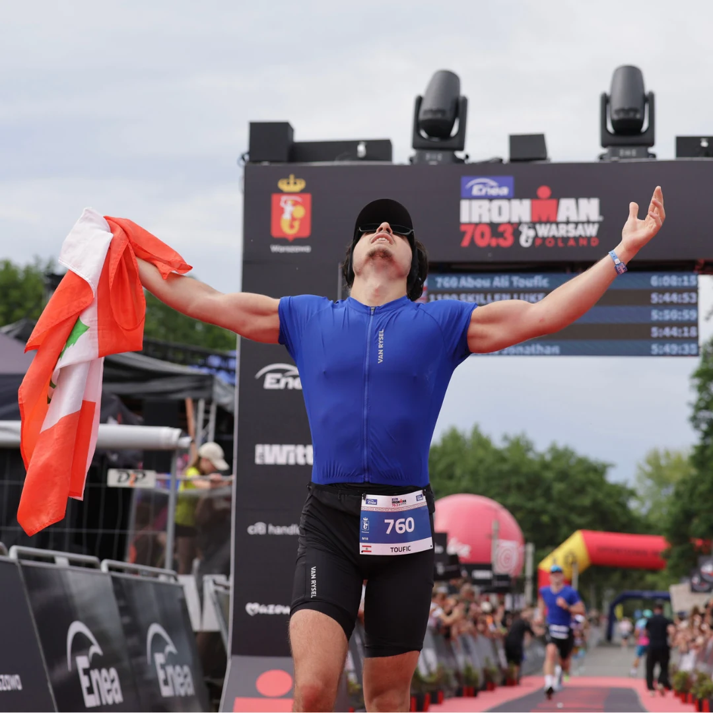

Use the facts.
Open the proof.
Short biography, mission facts, selected quotes, official race links and media folders for sponsors, journalists and creative teams.
Short enough to use.
Strong enough to matter.
The wording stays factual and does not imply Guinness or IRONMAN endorsement.
Toufic Abou Ali is a 20-year-old Lebanese founder-athlete and the Founder & CEO of Sira. After completing two marathons and his first IRONMAN 70.3 before turning 20, he began preparing to become the youngest male to complete an IRONMAN on six continents. The current public age benchmark is 21 years and 167 days, with a working completion deadline of November 27, 2027. The application and final record rules are still pending.
The story in numbers.
Use official result first. Use Strava as supporting activity proof.
IRONMAN 70.3 Warsaw
Completed June 7, 2026 at age 19.
Half-marathon best
Montpellier Run Festival 2026.
10K best
Envolez-Vous 2026.
Sira operating team
Founder proof alongside the athletic mission.
Direct lines.
No filler.
Quotes may be used with attribution to Toufic Abou Ali.
“Warsaw exposed the gap. Six Continents proves the work.” “Toughness can finish a race. Preparation controls the result.” “I had many reasons to quit. I chose one reason not to.” “Born in Lebanon. Building globally. Racing across six continents.”
Everything important in one place.
The complete private archive remains separate. These are the approved public entry points.